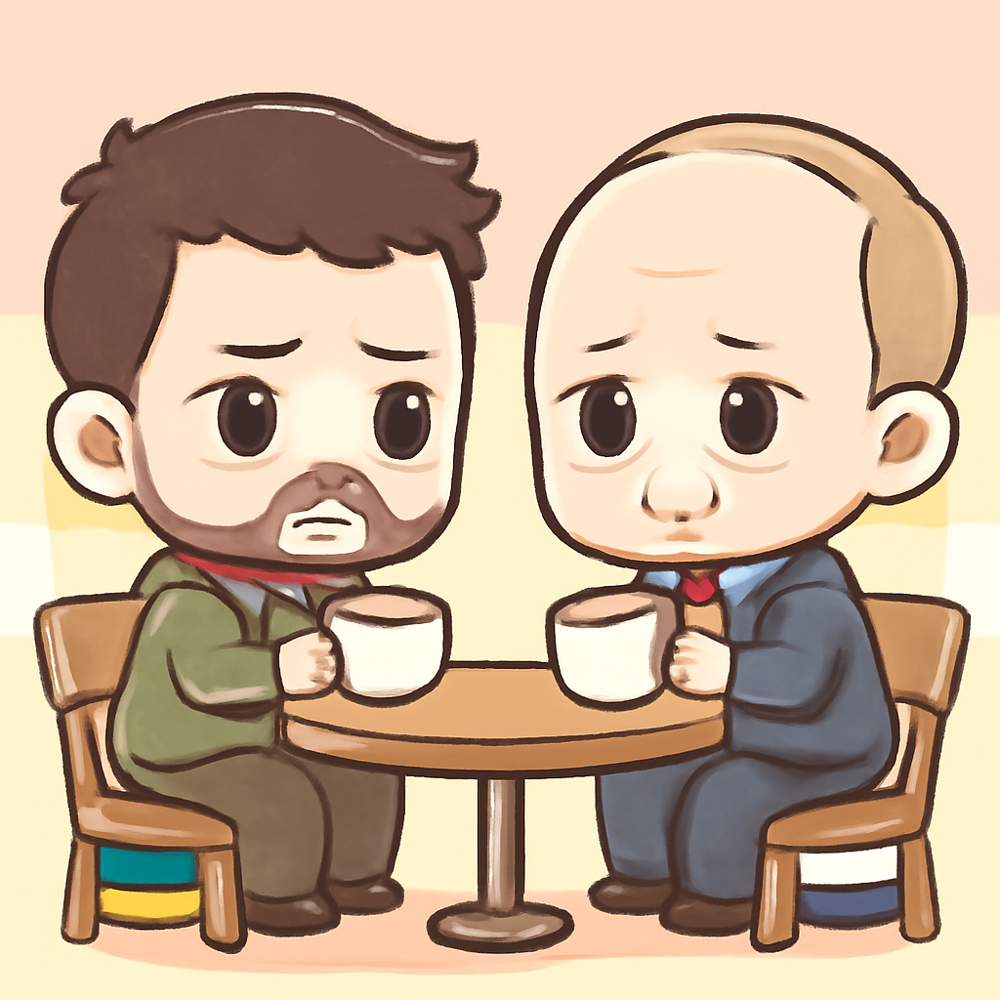
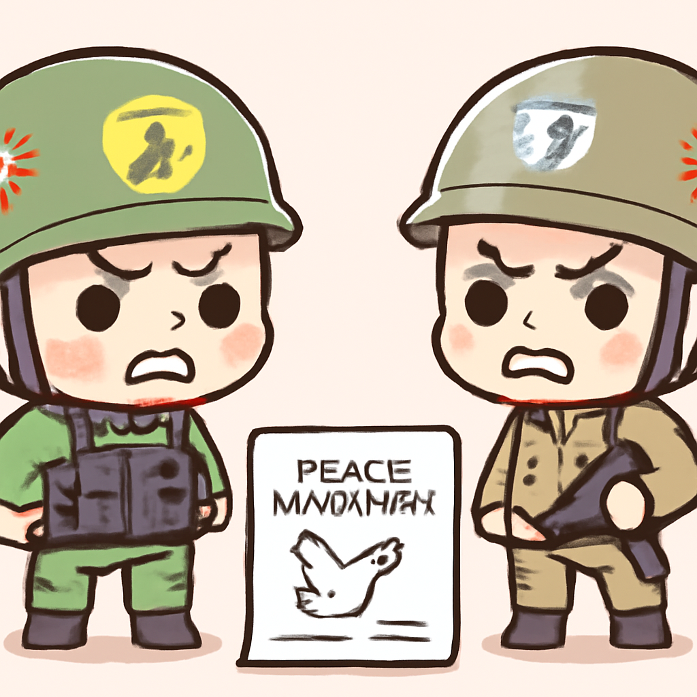
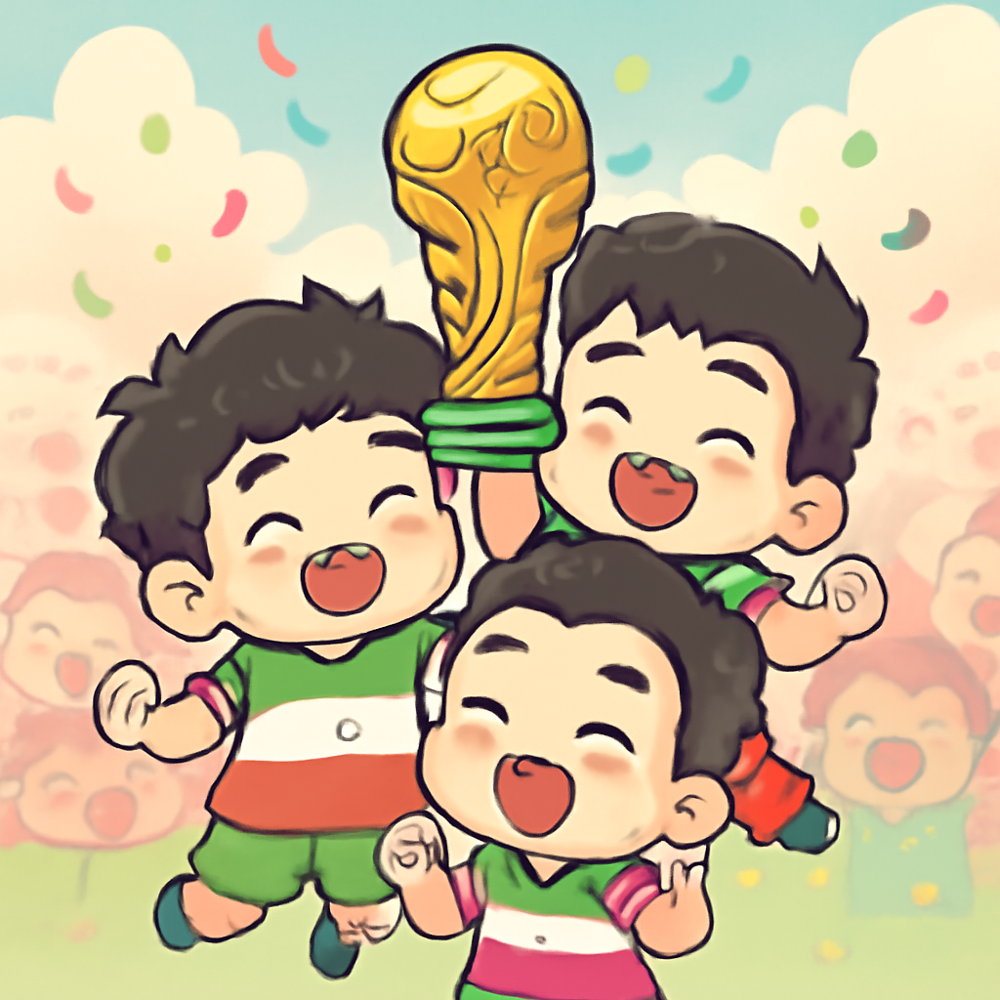
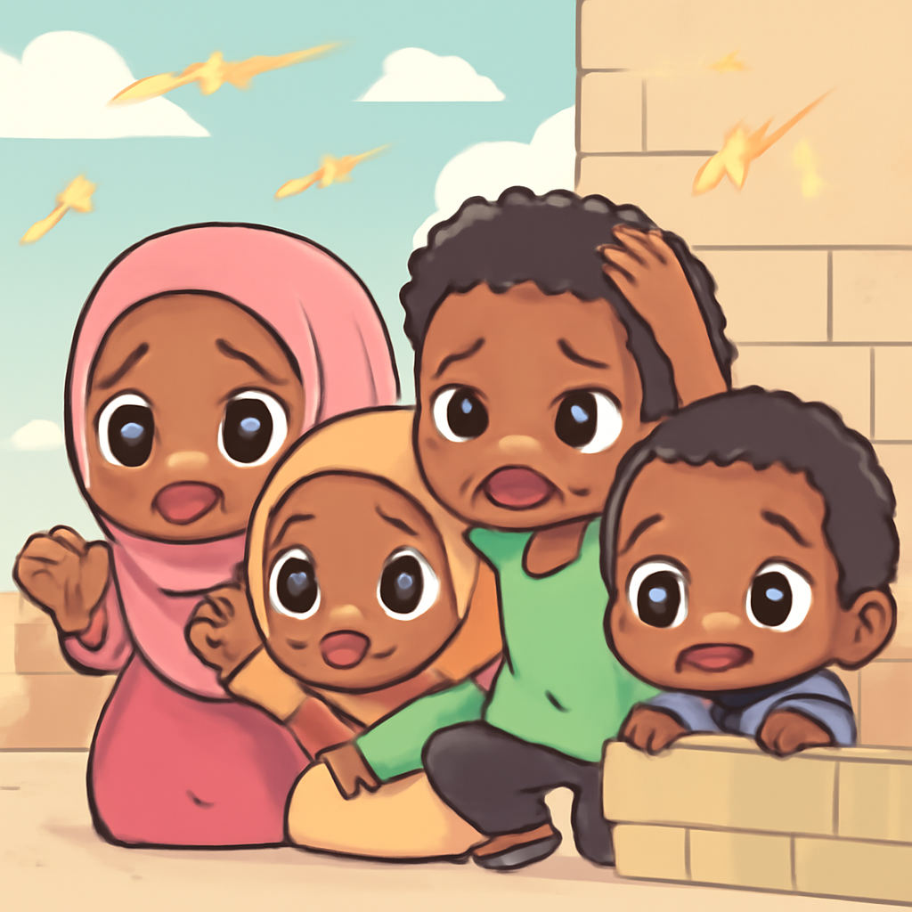

其一 · 烏克蘭基輔 · 澤倫斯基提議與普京面對面會談
烏克蘭總統希望與俄羅斯直接對話解決戰爭

在烏克蘭基輔，總統澤倫斯基公開信中要求與普京進行面對面會談，強調只有直接對話才能結束持續的戰爭。這一提議可能改變兩國的外交局勢，對於持續的衝突解決至關重要。希望這次會議能像咖啡約會一樣，讓雙方能更坦誠地溝通。
🔗 原始新聞 ↗
2026-06-05 · 以古觀今，以笑抗愁
烏克蘭總統希望與俄羅斯直接對話解決戰爭

在烏克蘭基輔，總統澤倫斯基公開信中要求與普京進行面對面會談，強調只有直接對話才能結束持續的戰爭。這一提議可能改變兩國的外交局勢，對於持續的衝突解決至關重要。希望這次會議能像咖啡約會一樣，讓雙方能更坦誠地溝通。
🔗 原始新聞 ↗
真主黨不滿以色列和黎巴嫩的停火協議

在以色列及黎巴嫩邊境，真主黨拒絕了美國促成的停火協議，稱這是對他們的投降。這使得持續緊張的局勢更加複雜，未來局面仍然不明朗，讓人不禁擔心是否會再度爆發衝突。或許真主黨覺得停火約定就像是吃到的過期食品，難以下嚥。
🔗 原始新聞 ↗
因訪問台灣，紐西蘭四名立法者遭中國禁入
在紐西蘭，四位立法者因訪問台灣而被中國禁入一年，外長表示對此感到驚訝，因為過去多次訪問並未遭遇問題。這一事件顯示出中台關係的敏感性，也引發了對紐西蘭與中國未來外交的思考。看來，出門旅遊的時候，還得先檢查行程是否會讓別人生氣！
🔗 原始新聞 ↗
在戰爭中，伊朗足球協會爭取參賽資格

在伊朗，足球協會主席梅赫迪·塔吉表示，他們正努力與FIFA溝通，確保伊朗能參加即將到來的世界杯。即使國內局勢艱難，足球仍然是民眾心中不可或缺的希望。希望這場比賽能讓人們暫時忘卻戰爭的陰霾，享受一場美好的運動盛宴！
🔗 原始新聞 ↗
索馬利亞首都發生史上最嚴重的槍戰

在索馬利亞摩加迪沙，激烈的槍戰於最近爆發，據報導是因為不同政治派系的武裝團體之間的衝突，造成嚴重人員傷亡。這是數年來最激烈的戰鬥，讓當地居民感到恐懼。希望和平能早日回到這片土地，讓人們能夠安心入睡，而不是聽著槍聲入夢！
🔗 原始新聞 ↗